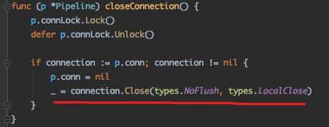

written by Alex Stocks on 2020/01/12，版权所有，无授权不得转载
网上有很多的编程实战与编程实践，譬如Effective Go。但常常是事非经历不知难。本文将陆续记录一些事故教训，以改进编程实践。
话说上周六【20200104】晚上 8 点，于某正在追查赶在封网前的应用发布失败的原因，某大佬发来线一个 sidecar 容器的诡异监控图像：
并告知通过 curl localhost:34902/debug/pprof/goroutine?debug=1 > /tmp/1.txt 抓到的 goroutine 栈已经从容器 download 出来并存入事故平台， 可供分析【真的很幸运，文件 download 下来后三分钟容器就被系统干掉了】。
刚打开如下 goroutine 栈图，看到 628178 个 gorouting 被 hang 在一个死锁上，瞬间感觉我完(真)蛋(牛)了(13)。

通过后面的 goroutine 堆栈，定位到了两处造成死锁的函数流程，其中一处流程的关键代码如下：

函数 Pipeline.closeConnection 红线处代码关闭连接后，底层库又回来调用相关回调函数进而导致 Pipeline.closeConnection 函数再次被调用，然后这个容器就完美的发生了上面的约 63 万个 goroutine 泄露。
改进后的代码如下：

事后总结教训，得出如下编程实践规则：
1 严禁在一行代码内对同一个变量产生两次写行为；
2 严禁在一行代码内对同一个变量产生既写又读的行为；
3 严禁在锁内执行被锁对象的行为函数。前两条规则是于某写西渣渣事后的编程实践，在此不做解释，对第三条实践规则的解释是：加锁只锁住它的目标对象，至于对象的相关动作或者对象【容器】内的对象的动作一定放在锁外。
sync.Pool 的本质是用来减轻 gc 负担 2，将它当做一个对象缓冲池并不合适：对象何时释放，用户是无法释放的。
虽然 sync.Pool 把对象存入其缓冲池时可以做到无锁，但是取值的时候可能碰到锁竞争的问题 3，所以可能对性能提升并没有多大帮助。
今日【20220209】读到 pixiu 团队以往成员 张其 同学的一篇文章《了解一下Go中的"sb"代码？》，其中有这么一段：
// https://play.studygolang.com/p/EC8uZQAIFsN
func BenchmarkTestStrPlus(b *testing.B) {
var result string
b.ResetTimer()
for i := 0; i < b.N; i++ {
result = strconv.Itoa(i) + result
}
}
func BenchmarkTestStrSprintf(b *testing.B) {
var result string
b.ResetTimer()
for i := 0; i < b.N; i++ {
result = fmt.Sprintf("%s%s", result, strconv.Itoa(i))
}
}
func BenchmarkTestJoin(b *testing.B) {
var result string
b.ResetTimer()
for i := 0; i < b.N; i++ {
result = strings.Join([]string{result, strconv.Itoa(i)}, "")
}
}
func BenchmarkTestBuffer(b *testing.B) {
var result bytes.Buffer
b.ResetTimer()
for i := 0; i < b.N; i++ {
if _, err := result.WriteString(strconv.Itoa(i)); err != nil {
panic(err)
}
}
}
func BenchmarkTestBuilder(b *testing.B) {
var result strings.Builder
b.ResetTimer()
for i := 0; i < b.N; i++ {
result.WriteString(strconv.Itoa(i))
}
}文中通过测试，结论是使用 strings.Builder.WriteString() 进行字符串拼接性能最好。其实吧，我觉得这是 “回字有四种写法”，个人推荐尽量使用 + 这种原始方式进行字符串拼接，因为性能并不是唯一。+ 这种字符串拼接方式，在老的 java 代码中，性能不行，现在已经优化的很好，不比 StringBuilder 或者 StringBuffer 差劲，我相信未来 Go 也如此。另外一个例子，Go 中所谓的 string 和 slice 的巧妙转化，在 go 1.6 之前，确实性能高，go 1.6 之后就很废柴了。
再举个例子，有些人写 goroutine pool，在 Go 1.10 之后也废柴了，因为 Go v1.10 之后应用层释放掉的 goroutine 会被 Go runtime 缓存起来。所有，大巧若拙，大工不作，尽量使用原始的方式，我们是语言的使用者，把优化留给语言开发者以及编译器，外加时间。
程序方法论 make it run, make it right, make it fast ，把优化工作放在最后。dubbogo 网络库 getty 一直坚持用原生的 go 网络接口，一直有人觉得用下 epoll 可能更好，但在目前为止尚未发现瓶颈所在。

|

|
- 2020/01/12，于雨氏，于丰台初写此文 [1 死锁与 goroutine 泄露]。
- 2020/10/18，于雨氏，于朝阳添加 [2 sync.Pool]。
- 2022/02/09，于雨氏，于朝阳添加 [3 字符串拼接]。